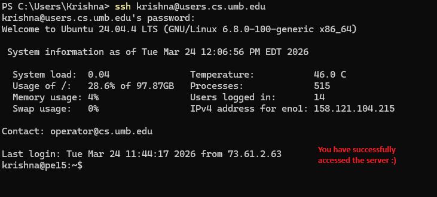

Screenshots: Connecting to CS Servers via SSH
A visual guide demonstrating how to connect to the UMass Boston CS servers using SSH from PowerShell.
Step 1: Open PowerShell and Enter the SSH Command
Open PowerShell on your Windows machine and type the SSH command to connect to the CS server:

Step 2: Successful Login
After entering your password, you will see the server welcome message with system information:

Step 3: Server Terminal
You are now connected and ready to use the CS server:
